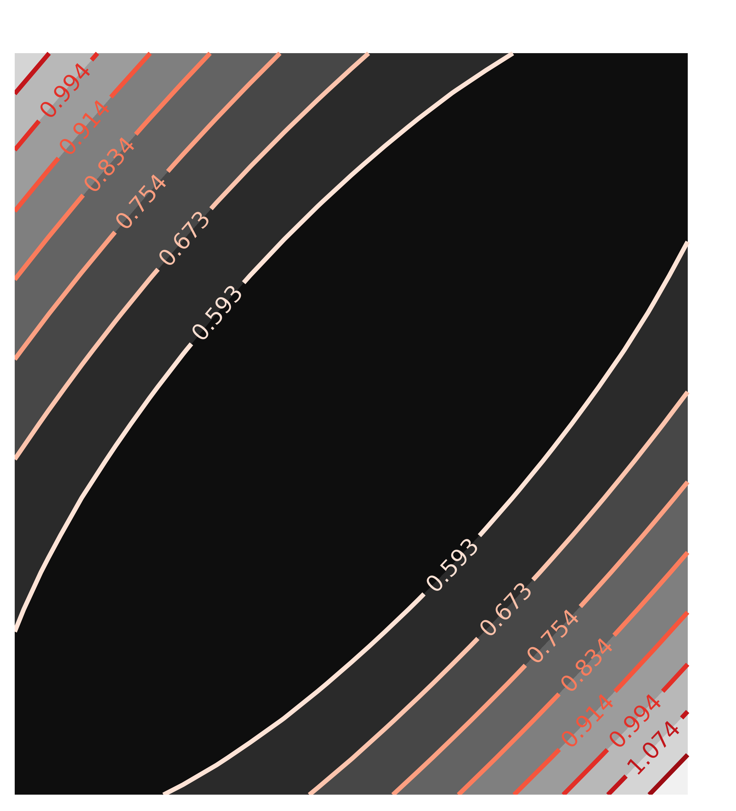
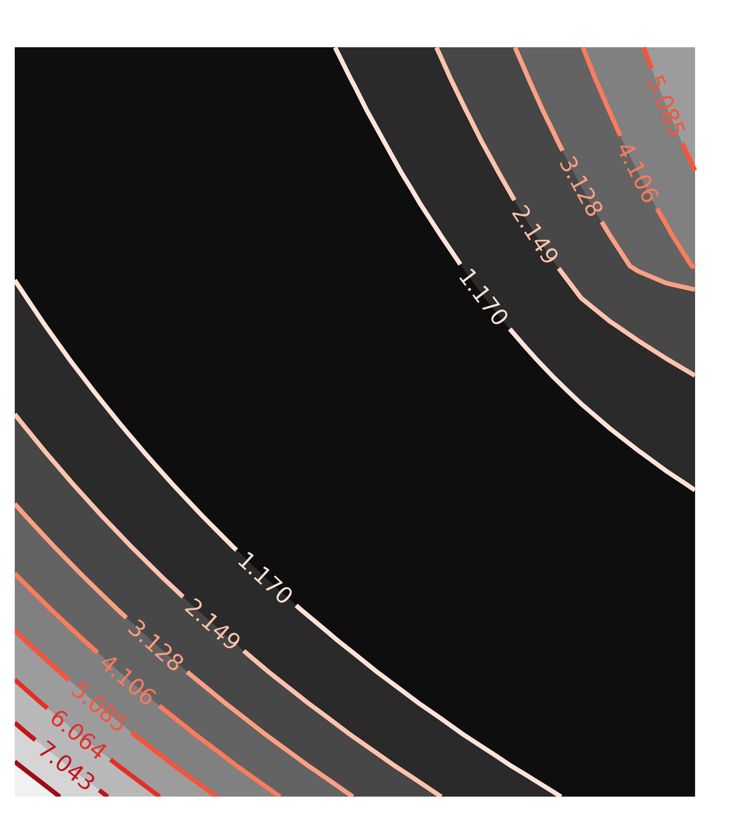

| Larch: X-ray Data Analysis |
Having good estimates for uncertainties in fitted parameters is important for any scientific analysis. One of principle attractions to using the Levenberg-Marquardt algorithm that is the default fitting mechanism with the minimize() function is that it will automatically calculate estimates of parameter uncertainties and correlations. This is very convenient and generally reliable, but it should be made clear that the basic assumptions made when these uncertainties are estimated are not always perfect. Unfortunately, it is sometimes difficult to tell when this is the case.
It is therefore fairly common to see analyses that include explicit exploration of Parameter values away from their best-fit solution, in order to determine the degree of confidence in the best-fit values. Larch provides two main functions to help explore such cases. To be sure, they are much slower than the automatic estimation of the uncertainties. For many (perhaps most) cases, they do not provide much better insight than the automatic method.
Calculate confidence intervals for the parameters from a given fit.
| Parameters: |
|
|---|---|
| Returns: | a dictionary of parameter names, with each value containing a list of (sigma, value) pairs. |
This function will adjust the value for each parameter, re-optimizing the other parameters until it finds the parameter values that increase sigma by the levels indicated.
Convert the output of confidence_intervals() into a printable report.
| Parameters: | conf_values – confidence values returned by confidence_intervals(). |
|---|---|
| Returns: | a string containing the report, which can be printed or stored. |
Returns the standard F-test value for the probability that one fit is better than another.
Let’s begin with a shortened version of the first example from the previous section.
## examples/fitting/doc_example_conf1.lar
# create mock data
mdat = group()
mdat.x = linspace(-10, 10, 201)
mdat.y = 1.0 + 12.0 * gaussian(mdat.x, 1.5, 2.0) + \
random.normal(size=len(mdat.x), scale=0.050)
params = group(off = guess(0),
amp = guess(5, min=0),
cen = guess(2),
wid = guess(1, min=0))
# define objective function for fit residual
def resid(p, data):
return data.y - (p.off + p.amp * gaussian(data.x, p.cen, p.wid))
enddef
# perform fit
mout = minimize(resid, params, args=(mdat,))
# print report of parameters, uncertainties
print fit_report(params)
out = confidence_intervals(mout, sigmas=(1, 2, 3))
print confidence_report(out)
## end of examples/fitting/doc_example_conf1.lar
The printed output from fit_report(params) will include this:
[[Variables]]
amp = 12.129867 +/- 0.124722 (init= 5.000000)
cen = 1.476822 +/- 0.017266 (init= 2.000000)
off = 0.998814 +/- 0.007131 (init= 0.000000)
wid = 2.022301 +/- 0.016938 (init= 1.000000)
[[Correlations]] (unreported correlations are < 0.100)
amp, off = -0.861
amp, wid = 0.808
off, wid = -0.692
=======================================================
while the output from the much more explicit search done in confidence_intervals() and reported by confidence_report() will be:
# Confidence Interval Report
# Sigmas: -3 -2 -1 0 1 2 3
# Percentiles: -99.730 -95.450 -68.269 0.000 68.269 95.450 99.730
#==========================================================================================
amp 11.755 11.88 12.005 12.13 12.256 12.385 12.517
-best -0.37459 -0.24967 -0.12455 0 0.12604 0.25555 0.38759
wid 1.9707 1.9885 2.0053 2.0223 2.0395 2.0569 2.0749
-best -0.051552 -0.033784 -0.016975 0 0.017156 0.034567 0.052626
off 0.9766 0.98468 0.9912 0.99881 1.0064 1.0128 1.0209
-best -0.022212 -0.014138 -0.0076156 0 0.0075667 0.013987 0.022049
cen 1.4248 1.4423 1.4596 1.4768 1.4941 1.5113 1.5289
-best -0.052057 -0.03452 -0.017248 0 0.017249 0.034524 0.052068
The automatic error estimates given from minimize() are meant to be
1- uncertainties. Comparing the two methods we find:
uncertainties. Comparing the two methods we find:
Parameter Best Value Automatic 1- Explicit 1- amp 12.1299 +/- 0.1247 +0.1267, -0.1246 cen 1.4768 +/- 0.0173 +0.0172, -0.0172 off 0.9988 +/- 0.0071 +0.0076, -0.0076 cen 2.0223 +/- 0.0169 +0.0172, -0.0170
which seems to justify the use of the automated method. The uncertainties
found from the more thorough exploration shows symmetric uncertainties,
even out to the 3- level, and of the 4 1-
uncertainties, 3 are within 2%, and the worst agreement, for the smallest
uncertainty is within 7%. It also shows that the scaling of
uncertainties is fairly linear with : the 3-
values are approximately 3 times the 1- values.
Of course, there are more challenging cases than the one above. A double exponential function is one such example, so we start with a fit to mock data
## examples/fitting/doc_example_conf2.lar
# Shows usage of fitting with non-normal correlation of variables,
# and confidence intervals.
random.seed(1)
dat = group(x = linspace(0, 10, 101))
dat.y = 3*exp(-dat.x/2) - 5*exp(-dat.x/9) + random.normal(size=len(dat.x), scale=0.05)
fitparams = group(a1 = guess(3.5),
a2 = guess(-9.5),
t1 = guess(3),
t2 = guess(15))
def fit_exp(pars, dat):
model = pars.a1 * exp(-dat.x / pars.t1) + pars.a2 * exp(-dat.x / pars.t2)
return model - dat.y
enddef
minout = minimize(fit_exp, fitparams, args=(dat,))
print fit_report(fitparams, min_correl=0)
final = fit_exp(fitparams, dat) + dat.y
newplot (dat.x, dat.y, label='data', marker='o', linewidth=0)
plot (dat.x, final, label='fit')
## end of examples/fitting/doc_example_conf2.lar
The resulting statistics report with the automated uncertainties is:
===================== FIT RESULTS =====================
[[Statistics]] Fit succeeded, method = 'leastsq'.
Message from fit = Fit succeeded.
npts, nvarys, nfree = 101, 4, 97
nfev (func calls) = 36
chi_square = 0.191322
reduced chi_square = 0.001972
[[Variables]]
a1 = 2.828857 +/- 0.149776 (init= 3.500000)
a2 = -4.819553 +/- 0.159495 (init= -9.500000)
t1 = 1.878519 +/- 0.100212 (init= 3.000000)
t2 = 9.270866 +/- 0.309035 (init= 15.000000)
[[Correlations]] (unreported correlations are < 0.100)
a2, t2 = 0.991
a1, a2 = -0.991
a1, t2 = -0.988
a2, t1 = -0.968
t1, t2 = -0.937
a1, t1 = 0.935
=======================================================
You can see that the correlations between all 6 pairs of variables is above 90%. The resulting plot of the best-fit looks fairly reasonable:
Figure 1. Fit to double exponential function.
But now we ask for the more thorough investigation of the confidence intervals in these parameters with:
conf_int = confidence_intervals(minout)
print confidence_report(conf_int)
and the resulting report is:
# Confidence Interval Report
# Sigmas: -3 -2 -1 0 1 2 3
# Percentiles: -99.730 -95.450 -68.269 0.000 68.269 95.450 99.730
#==========================================================================================
a1 2.4622 2.5704 2.691 2.8289 2.9936 3.1985 3.467
-best -0.36665 -0.25842 -0.13785 0 0.16472 0.36968 0.63812
a2 -5.4926 -5.2111 -4.9945 -4.8196 -4.6726 -4.544 -4.429
-best -0.67309 -0.39152 -0.17499 0 0.14698 0.27553 0.39058
t2 8.2604 8.6221 8.9556 9.2709 9.5761 9.8776 10.182
-best -1.0105 -0.64882 -0.31531 0 0.30526 0.60676 0.91132
t1 1.6107 1.6942 1.7827 1.8785 1.9841 2.1049 2.2456
-best -0.26785 -0.18436 -0.09583 0 0.10553 0.22637 0.36709
Now can see more asymmetric uncertainty values, specifically that the
-n- and +n- are different, and don’t seem to be
linear in n. Comparing the 1- levels between the automated
and explicit methods as we did above, we now have
Parameter Best Value Automatic 1- Explicit 1- a1 2.8289 +/- 0.1498 +0.1647, -0.1379 a2 -4.8196 +/- 0.1595 +0.1470, -0.1750 t1 9.2709 +/- 0.1002 +0.1055, -0.0958 t2 1.8785 +/- 0.3090 +0.3053, -0.3153
In fairness, the automated values don’t look too bad, given that they cannot reflect asymmetric uncertainties. But, like the reported correlations, the full report above hints at a less than ideal case.
We can further explore the correlation between pairs of variables by making
and visualizing a map of the chi-square ( ) statistic. This
can be helpful to determine if the automatically calculated uncertainties
and correlation are reasonable, and to look for pathological cases. The
chi2_map() function will calculate a map of for a pair
of variable parameters by brute force.
) statistic. This
can be helpful to determine if the automatically calculated uncertainties
and correlation are reasonable, and to look for pathological cases. The
chi2_map() function will calculate a map of for a pair
of variable parameters by brute force.
Return a chi-square map for two parameters in a fit
| Parameters: |
|
|---|---|
| Returns: | a tuple of (x_vals, y_vals, chi2_map) |
The xrange and yrange arguments can be used to fully dictate the x and y values to use. By default, the x and y values are automatically determined from nx, ny, and sigmas, with the sigmas argument sets how far from the best value to extend the ranges.
As an example usage, we return to the first example of the “well-behaved” fit, and run chi2_map() on a pair of variables with low correlation and a pair with high correlation:
x1, y1, chi2_ampcen = chi2_map(mout, 'amp', 'cen', nx=21, ny=21)
x2, y2, chi2_ampwid = chi2_map(mout, 'amp', 'wid', nx=21, ny=21)
contour(chi2_ampcen, x=x1, y=y1, title='Correlation(amp, cen)')
contour(chi2_ampwid, x=x2, y=y2, win=2, title='Correlation(amp, wid)')
with the resulting Chi-square maps looking like this:

Figure 9. Chi-square maps for two pairs of variables for the fit to Gaussian data. With the best-fit chi-square value of 0.5134, the contour map for relatively uncorrelated parameters amp and cen is shown on the left, while that for the more highlycorrelated parameters amp and wid is shown on the right.
The circular map for the uncorrelated parameters amp and cen and the elliptical map for the highly correlated parameters amp and wid are exactly as would be expected, and what the automated estimate of uncertainties and correlations assumes.
But now, if we turn to the more pathological case of the double exponential, we calculate the chi-square maps as:
x1, y1, c1 = chi2_map(minout, 'a1', 'a2', nx=25, ny=25)
x2, y2, c2 = chi2_map(minout, 'a1', 't1', nx=25, ny=25)
contour(c1, x=x1, y=y1, title='Correlation(a1, a2)')
contour(c2, x=x2, y=y2, win=2, title='Correlation(a1, t1)')
with the resulting contour plots:

Figure 10. Chi-square maps for two pairs of variables for the fit to Double Exponential. With the best-fit chi-square value of 0.1913, the contour map for a1 and *a2 is shown on the left, while that for a1 and t2 is shown on the right.
Here, the values of chi-square quickly grow very large away from the ideal fit. More importantly, the maps are not remotely elliptical.
Finally, it should be emphasized that while all the tests in this section are informative, they are also fairly slow, re-running the fits many times. It is probably safe to rely on the automatic calculations of uncertainties and correlations, and use these methods on occasions of extremely high correlation, or when nearing a final analysis.
{kind=link}
{kind=link}